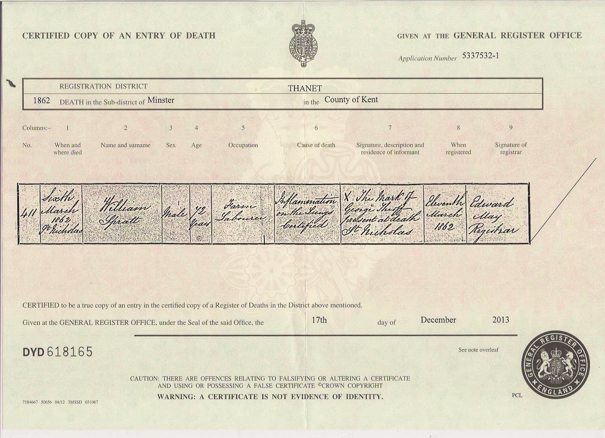
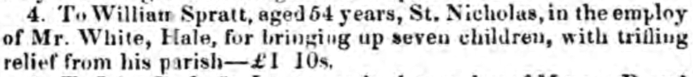
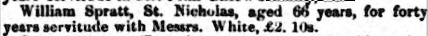
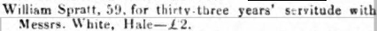

William Spratt 1789 - 1862
[ Home ] | [ Calendar ] | [ Surnames Index ] | [ Family History ]A laborer and the son of James Spratt and Sarah Impett, William Spratt, the 3 times great-grandfather of <a href="I1.html">Nigel Horne</a>, was born in Margate, Kent, England on May 14, 1789<span class="citation">1,2,3</span>, was baptized there at St John the Baptist Church on May 31, 1789 and married Mary Hughes (with whom he had 11 children: <a href="I48.html">James</a>, <a href="I3373.html">Sarah</a>, <a href="I3372.html">William</a>, <a href="I1328.html">Sarah</a>, <a href="I517.html">Matilda</a>, <a href="I1469.html">Henry</a>, <a href="I3374.html">Hope</a>, <a href="I3375.html">Charity</a>, <a href="I1470.html">Harriet</a>, <a href="I1471.html">Mary</a> and <a href="I1472.html">Esther</a>) in St Nicholas-at-Wade, Kent, England on Oct 8, 1815<span class="citation">5</span> (KFHS CD 17/St. Nicholas At Wade, Kent, England).</p><p>William spent all of his life in Kent, England. Throughout his life, he lived in several places around the county: in Kent on Mar 8, 1815<span class="citation">8</span>; at The Street in St Nicholas-at-Wade on Jun 6, 1841<span class="citation">9</span>; in St Nicholas-at-Wade in 1851<span class="citation">2</span>; and at The Street in St Nicholas-at-Wade on Apr 7, 1861<span class="citation">10</span>. <p>He died on Mar 6, 1862 in St Nicholas-at-Wade<span class="citation">4</span> (inflammation of the lungs) and was buried there on Mar 13, 1862 (aged 72yrs. Verified at Margate library 24 Mar 2010)<span class="citation">6,7</span>.
Parents
- James was born c. 1761
- Sarah was born c. 1765
Children
- James was born on May 12, 1816
- Sarah was born c. 1817
- William was born c. 1820
- Sarah was born c. 1821
- Matilda was born on Jun 5, 1825
- Henry was born c. 1827
- Hope was born c. 1830
- Charity was born c. 1830
- Harriet was born c. 1832
- Mary was born c. 1835
- Esther was born in 1836
Citations
- 1841 England Census Online publication - Provo, UT, USA: The Generations Network, Inc., 2006.Original data - Census Returns of England and Wales, 1841. Kew, Surrey, England: The National Archives of the UK (TNA): Public Record Office (PRO), 1841. Data imaged from the National
- 1851 England Census Online publication - Provo, UT, USA: The Generations Network, Inc., 2005.Original data - Census Returns of England and Wales, 1851. Kew, Surrey, England: The National Archives of the UK (TNA): Public Record Office (PRO), 1851. Data imaged from the National
- 1861 England Census Online publication - Provo, UT, USA: The Generations Network, Inc., 2005.Original data - Census Returns of England and Wales, 1861. Kew, Surrey, England: The National Archives of the UK (TNA): Public Record Office (PRO), 1861. Data imaged from the National
- England & Wales, FreeBMD Death Index: 1837-1915 Online publication - Provo, UT, USA: The Generations Network, Inc., 2006.Original data - General Register Office. England and Wales Civil Registration Indexes. London, England: General Register Office. © Crown copyright. Published by permission of the Cont
- England, Select Marriages, 1538–1973 Ancestry.com Operations, Inc.
- Public Member Trees Online publication - Provo, UT, USA: The Generations Network, Inc., 2006.Original data - Family trees submitted by Ancestry members.Original data: Family trees submitted by Ancestry members.
- England Deaths & Burials 1538-1991 - Findmypast
- England, Select Marriages, 1538–1973 Ancestry.com Operations, Inc.
- 1841 England, Wales & Scotland Census - Findmypast (was age 50)
- 1861 England, Wales & Scotland Census - Findmypast (was age 71 and the head of the household)
Notes
A tithe award was awarded to him by James White on 10/10/1839 (www.kentarchaeology.org.uk).
Media
William Spratt - death

Kentish Gazette 12-12-1843

Kentish Times and Farmers' Gazette - 8 Dec 1855

Kentish Times and Farmers' Gazette - 9 Dec 1848

Canterbury Baptisms - GBPRS/CANT/B/96009953
Canterbury Baptisms Transcription - GBPRS-CANT-B-96209289
1841 England, Wales & Scotland Census Transcription - GBC-1841-0013960498
England Marriages 1538-1973 - R_848220122
England & Wales deaths 1837-2007 - BMD/D/1862/1/HT/001268/005
1861 England, Wales & Scotland Census - GBC/1861/0003520730
England Births & Baptisms 1538-1975 - R_883183481
England Births & Baptisms 1538-1975 - R_886156467
England Births & Baptisms 1538-1975 - R_885509805
England Deaths & Burials 1538-1991 - R_276599390
Family Tree

Generated by Ged2Site. Last updated on Jul 20, 2025